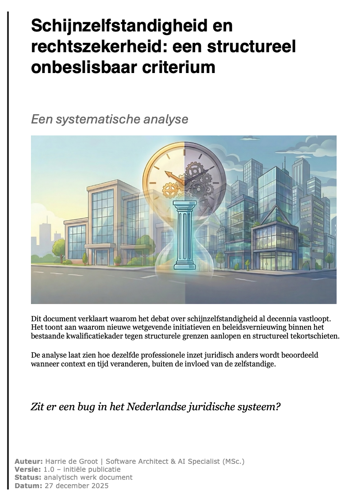
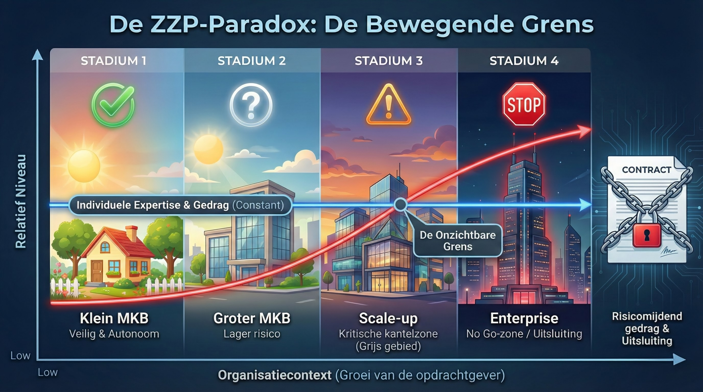
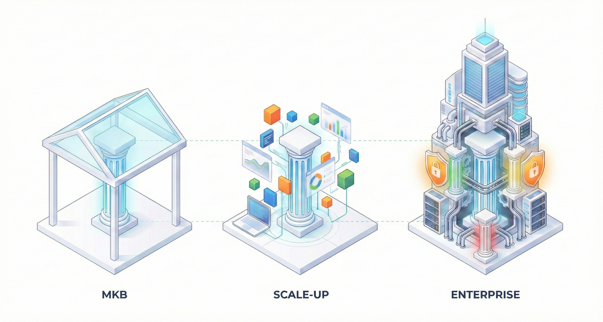
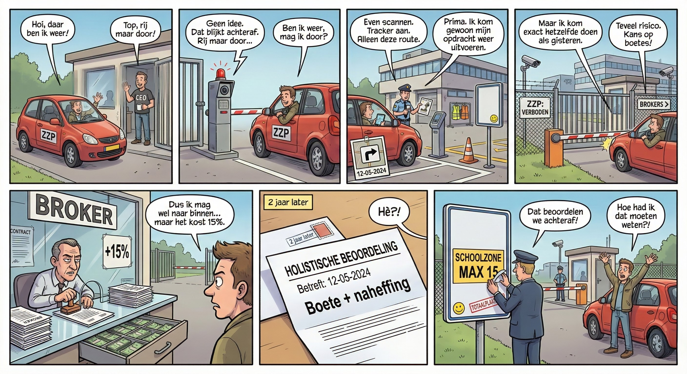

Deze editie biedt de volledige systeemdiagnose. Het document bevat de integrale bewijslast achter de ZZP-Paradox en ontsluit de bronset via de Evidence Map.
Verken de materie via de interactieve AI omgeving:
NotebookLM is een publieke navigatiehulp; citeer en verifieer altijd in de canon-PDF met sectie en quote.
Het centrale mechanisme van deze diagnose legt bloot dat een werkrelatie juridisch kan kantelen uitsluitend door de groei en professionalisering van de opdrachtgever.
Door de zelfstandige inzet in de analyse constant te houden, wordt zichtbaar dat de juridische kwalificatie meeschuift met de organisatiecontext. Rechtszekerheid vooraf is hiermee in de praktijk geen eigenschap van het werk, maar van de omgeving waarin het resultaat landt. De visualisatie maakt zichtbaar dat er geen vooraf kenbare drempel bestaat waar zelfstandigheid omslaat naar een herkwalificatie als dienstbetrekking.

Deze onzekerheid over de juridische status van zelfstandigen hangt nauw samen met de architecturale complexiteit van moderne organisaties. Waar een specialist in een kleine, overzichtelijke omgeving vaak duidelijk autonoom kan opereren, wordt dezelfde opdracht in een complexe omgeving omgeven door gelaagde governance, security en compliance.
Daar ontstaat de frictie: om resultaat te leveren moet de professional aansluiten op de toegangs-, proces-, en kwaliteitsgates van de opdrachtgever. Deze noodzakelijke integratie in de “machine” van de organisatie is geen keuze voor hiërarchie, maar een randvoorwaarde om überhaupt te kunnen leveren. In de praktijk wordt dit spanningsveld echter geregeld verkeerd geïnterpreteerd als gezag of inbedding. Hieronder wordt dat mechanisme zichtbaar gemaakt in de gelaagdheid van de pilaren.

Gebrek aan rechtszekerheid vooraf stuurt opdrachtgevers richting risicomijdend gedrag aan de poort. Dat vertaalt zich in extra drempels, verplichte schakels of uitsluiting, en verstoort zo structureel de werking van de arbeidsmarkt en kenniseconomie. Het resultaat is een maatschappelijk waardelek in de orde van grootte van honderden miljoenen tot ruim €1 miljard per jaar.
De onderstaande casus illustreert dit patroon in de praktijk: een professional die jarenlang consistent expertise levert, kan plotseling worden uitgesloten of verplicht via intermediatie moeten werken. Dit gebeurt niet door een inhoudelijke verandering in het werk, maar door een veranderende risicoperceptie bij de opdrachtgever.

Dit document is opgesteld als een toetsbaar model. Wilt u de kernclaim weerleggen? Geef één schaalbaar, praktisch beslispunt vooraf dat in complexe organisaties (Stadium 4) voorspelbaar werkt. Verwijs naar de passage in de brontekst via dit formulier.